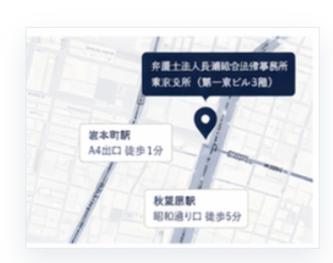

駅近でアクセス良好
岩本町駅徒歩1分・
秋葉原駅徒歩5分の好立地
岩本町駅徒歩1分・
秋葉原駅徒歩5分の好立地
個人の方から企業の方まで
幅広くサポート
民事・刑事・企業法務まで
多様な法律問題に対応
状況の整理から解決まで
親身にご相談に応じます
都営新宿線 岩本町駅 A4出口 徒歩1分
JR秋葉原駅 昭和通り口 徒歩5分
平日 9:00 - 18:00（土日祝日も事前予約で対応可能）
事務所案内を見る
Ibaraki Area Network
東京支所に加え、茨城県内の牛久本部・日立支所・水戸支所・守谷支所が連携し、広域のご相談に対応します。
TX沿線・2拠点体制
つくばエクスプレス沿線エリアを広くカバー
東京支所と茨城県内4拠点が連携し、迅速で質の高いリーガルサービスを提供します。
つくばエクスプレス沿線のご案内お電話またはフォームより
お問い合わせください。
担当者よりご連絡し、
ご相談日を調整します。
初回のご相談は無料です。
お悩みをお聞かせください。
解決に向けたご提案を
いたします。